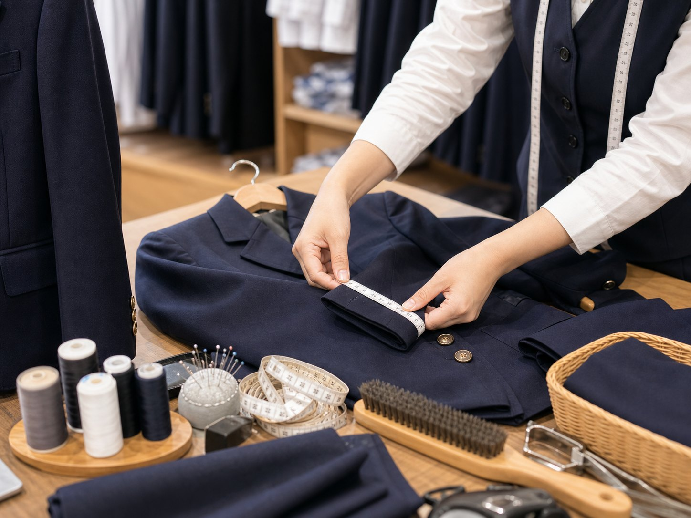

修理・補正
学生服、セーラ服どんな修理でも、できる限り対応させていただきます。
修理、補正の際は洗濯をしてからお持ちになってください。
かばん修理は、当店ご購入の商品に限ります。メーカーによっては修理できない物もあります。ご了承ください。リース用カバン用意しております。
傘修理は、当店ご購入の商品に限ります。メーカーによってはできない物もございます。ご了承ください。修理に1ヶ月ほどかかります。
Service
購入後の修理・補正、返品・交換、制服のお手入れまで、永くきれいに着るための情報をまとめました。
Care
学生服、セーラ服の修理・補正、かばん修理、傘修理まで、できる限り対応させていただきます。お手入れ方法もご確認ください。

学生服、セーラ服どんな修理でも、できる限り対応させていただきます。
修理、補正の際は洗濯をしてからお持ちになってください。
かばん修理は、当店ご購入の商品に限ります。メーカーによっては修理できない物もあります。ご了承ください。リース用カバン用意しております。
傘修理は、当店ご購入の商品に限ります。メーカーによってはできない物もございます。ご了承ください。修理に1ヶ月ほどかかります。
購入後の返品・サイズ交換は、10日以内にお願いいたします。
特に白色商品に関しては、試着による汚れなどが認められた場合は、期限内であっても返品交換をお断りさせていただくことがございます。
タグ、包装品などが外されている場合、紛失している場合も返品交換をお断りさせていただくことがございます。
制服を永くきれいに保つ為に、二週間に一度はご家庭で洗濯をしましょう。
制服を軽くブラッシングしてホコリを落とします。襟や袖など汚れが付きやすい部分に中性洗剤などの原液を塗っておくと、洗剤効果がアップします。
きれいに畳んで一つのネットに一着だけ入れて下さい。制服が水に浮かばないようにしっかり沈め、おしゃれ着用洗剤などの中性洗剤で＜手洗いコース＞＜ドライコース＞で制服だけで洗いましょう。脱水は短時間に設定して下さい。
洗濯後はなるべく早く、しわをのばし、形を整えて日陰干しして下さい。厚みのあるハンガーを使うと型崩れしにくいです。
普段のお手入れは、勇吉屋でプレゼントのエチケットブラシでよくブラッシングしてください。良いものを永く着る。この節約を勇吉屋では薦めております。
血液のシミ：汚れた部分を40℃以下のぬるま湯で洗います。液体の酵素系漂白剤を汚れに直接つけます。通常洗濯1回分の洗剤を入れた洗濯液を作り、30分～1時間つけおきします。（ウールや絹などのデリケートな素材は、つけおきはお勧めしません）つけおきした衣類と洗剤液を洗濯機に入れ、水をたして洗濯します。
ボールペンの汚れ：ご飯粒（梅干しサイズ）と液体洗剤5～6滴を混ぜて「ご飯粒洗剤」を作ります。汚れ部分を水に濡らし、「ご飯粒洗剤」をすり込みます。プラスチックのスプーンなどで、汚れをしごいて落とし、そのあと通常洗濯します。
食べこぼしの汚れ（ミートソース）：付着している固形物を取り除きます。汚れに部分洗い剤をつけて、下に敷いたタオルに移すようにトントンとたたき落とし、そのあと通常洗濯します。